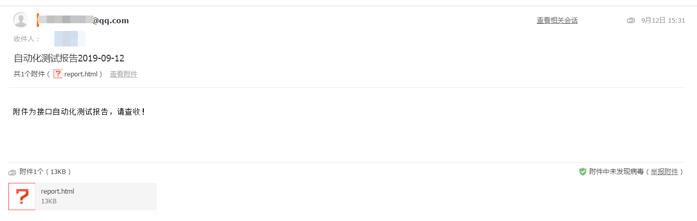

import smtplib, email, os, time
from email.mime.multipart import MIMEMultipart
from email.mime.text import MIMEText
from email.header import Header
#设置smtplib所需的参数
smtpserver = 'smtp.qq.com' #SMTP服务器地址
username = 'xxx@qq.com' # 发件人地址，通过控制台创建的发件人地址
password = '******' # 发件人密码，通过控制台创建的发件人密码
receiver = ['xxx@dadaodata.com'] #单个收件人
# receivers = ['xxx@dadaodata.com', 'xxx@qq.com'] # 收件人地址或是地址列表，支持多个收件人，最多30个
# 构造邮件MIMEMultipart对象
msg = MIMEMultipart('mixed')
msg['Subject'] = Header('自动化测试报告' + time.strftime("%Y-%m-%d"), 'utf-8').encode()#自定义邮件主题
msg['From'] = '%s <%s>' % (username, username)#邮件发送者
msg['To'] = ";".join(receiver)#邮件接受者
msg['Message-id'] = email.utils.make_msgid()
msg['Date'] = email.utils.formatdate()
# 构造文字内容
text_plain = MIMEText('附件为接口自动化测试报告，请查收！', 'plain', 'utf-8')#邮件内容
msg.attach(text_plain)
#构造附件
test_report = r'F:\PythonAutomation\Python_PyCharm\TestReport' #存放文件的目录
lists = os.listdir(test_report) #列出目录的下所有文件保存到lists
lists.sort(key=lambda fn:os.path.getmtime(test_report + "\\" + fn)) #按时间排序
file_new = os.path.join(test_report,lists[-1]) #获取最新的文件保存到file_new
sendfile = open(file_new,'rb').read()
text_att = MIMEText(sendfile, 'base64', 'utf-8')
text_att["Content-Type"] = 'application/octet-stream'
text_att["Content-Disposition"] = 'attachment; filename="report.html"'#重新命名附件
msg.attach(text_att)
# 发送邮件
try:
# client = smtplib.SMTP()
# client.connect(smtpserver, 25) #SMTP普通端口为25
client = smtplib.SMTP_SSL() #python 2.7以上版本，若需要可使用SSL
client.connect(smtpserver, 465) #SSL端口465
# client.set_debuglevel(1) #用set_debuglevel(1)可以打印出和SMTP服务器交互的所有信息
client.login(username, password)
client.sendmail(username, receiver, msg.as_string())
client.quit()
print('邮件发送成功')
except smtplib.SMTPConnectError as e:
print('邮件发送失败，连接失败:', e.smtp_code, e.smtp_error)
except smtplib.SMTPAuthenticationError as e:
print('邮件发送失败，认证错误:', e.smtp_code, e.smtp_error)
except smtplib.SMTPSenderRefused as e:
print('邮件发送失败，发件人被拒绝:', e.smtp_code, e.smtp_error)
except smtplib.SMTPRecipientsRefused as e:
print('邮件发送失败，收件人被拒绝:', e.args, e.recipients)
except smtplib.SMTPDataError as e:
print('邮件发送失败，数据接收拒绝:', e.smtp_code, e.smtp_error)
except smtplib.SMTPException as e:
print('邮件发送失败: ', str(e))
except Exception as e:
print('邮件发送失败: ', str(e))
执行结果如下：